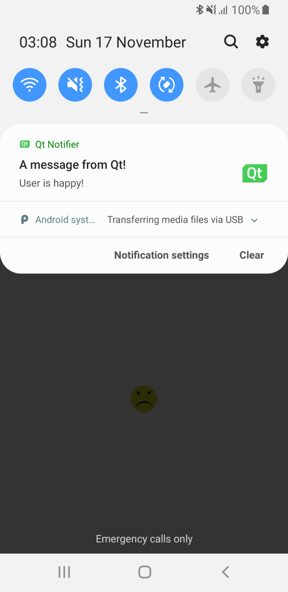

Qt Notifier
Demonstrates calling Java code from an Android application.

This example demonstrates how to add a custom Java class to an Android application, and how to call into this using the JNI convenience APIs in the Qt Android Extras module. The application UI is created by using Qt Quick.
Click on either of the smiley faces to put a notification in the status area of the Android device.
Running the Example
To run the example from Qt Creator, open the Welcome mode and select the example from Examples. For more information, visit Building and Running an Example.
Calling Java Methods from C++ Code
We define a custom Java class called NotificationClient in the NotificationClient.java file:
package org.qtproject.example.notification;
import android.app.Notification;
import android.app.NotificationManager;
import android.content.Context;
import android.content.Intent;
import android.app.PendingIntent;
import android.graphics.Color;
import android.graphics.BitmapFactory;
import android.app.NotificationChannel;
public class NotificationClient
{
private static NotificationManager m_notificationManager;
private static Notification.Builder m_builder;
public NotificationClient() {}
public static void notify(Context context, String message) {
try {
m_notificationManager = (NotificationManager) context.getSystemService(Context.NOTIFICATION_SERVICE);
if (android.os.Build.VERSION.SDK_INT >= android.os.Build.VERSION_CODES.O) {
int importance = NotificationManager.IMPORTANCE_DEFAULT;
NotificationChannel notificationChannel = new NotificationChannel("Qt", "Qt Notifier", importance);
m_notificationManager.createNotificationChannel(notificationChannel);
m_builder = new Notification.Builder(context, notificationChannel.getId());
} else {
m_builder = new Notification.Builder(context);
}
m_builder.setSmallIcon(R.drawable.icon)
.setLargeIcon(BitmapFactory.decodeResource(context.getResources(), R.drawable.icon))
.setContentTitle("A message from Qt!")
.setContentText(message)
.setDefaults(Notification.DEFAULT_SOUND)
.setColor(Color.GREEN)
.setAutoCancel(true);
m_notificationManager.notify(0, m_builder.build());
} catch (Exception e) {
e.printStackTrace();
}
}
}
In the NotificationClient C++ class header file, notificationclient.h, we declare a simple C++ API to display notifications on an Android device. It consists of a single string property, notification, and a slot, updateAndroidNotification(), that calls the Java code:
Q_PROPERTY(QString notification READ notification WRITE setNotification NOTIFY notificationChanged)
...
private slots:
void updateAndroidNotification();
A NotificationClient object is exposed to the QML in the main source file, main.cpp:
QQuickView view;
NotificationClient *notificationClient = new NotificationClient(&view);
view.engine()->rootContext()->setContextProperty(QLatin1String("notificationClient"),
notificationClient);
In the NotificationClient C++ class source file, notificationclient.cpp, we import the QtAndroid class:
#include <QtAndroid>
This will allow us to use QAndroidJniObject for JNI calls, and also allow us to pass our application's context to the Java methods as in:
QtAndroid::androidContext().object()
We connect the notificationChanged() signal to the updateAndroidNotification() slot to update the notification text when the notification property changes:
NotificationClient::NotificationClient(QObject *parent) : QObject(parent) { connect(this, SIGNAL(notificationChanged()), this, SLOT(updateAndroidNotification())); }
The NotificationClient::updateAndroidNotification() function calls the Java method. We construct a Java string from the notification string property:
void NotificationClient::updateAndroidNotification() { QAndroidJniObject javaNotification = QAndroidJniObject::fromString(m_notification);
And pass the string object as a parameter to the Java notify() method. Note that we must supply the signature ourselves:
QAndroidJniObject::callStaticMethod<void>(
"org/qtproject/example/notification/NotificationClient",
"notify",
"(Landroid/content/Context;Ljava/lang/String;)V",
QtAndroid::androidContext().object(),
javaNotification.object<jstring>());
}
See also Qt for Android and Qt Android Extras.